AI Academy · Level 4 · Grade 9 · Week 12 · Student lesson
Nearest Neighbors
Learn to understand, design, build, test and explain AI systems responsibly.
Project: Responsible Plant Classifier
Before you start
AI-2 Week 22: nearest ties need a predefined policy.
Plan time to read, investigate and explain. Keep predictions separate from observations.
Student lesson · 1 of 14
Your mission
Your learning target
I can compute absolute distances and rank training neighbours.
I can apply a declared neighbour count and distance tie rule.
I can evaluate neighbour predictions without using validation labels as neighbours.
Remember before reading
Close your notes first. A rough first answer helps us choose the right starting point; it is not a score for your ability.
Without opening the old lesson, explain one key idea from Decision Trees. Give an example and a mistake that the idea helps you avoid.
Without opening the old lesson, explain one key idea from Dataset Cards. Give an example and a mistake that the idea helps you avoid.
Without opening the old lesson, explain one key idea from Label Quality. Give an example and a mistake that the idea helps you avoid.
After trying, check the relevant lesson or ask your teacher. Change the part of your explanation that the evidence shows was wrong.
k-nearest neighbors predicts from nearby labeled examples under a chosen feature scale, distance rule, and value of k.
Builder name and experiment date:
Readiness for the connected explanation
What does a fitted depth-one tree store, and what does it do with a new example?
This week’s end goal
By the end, I can explain nearest neighbors using a traced example and a stated limitation.
Student lesson · 2 of 14
Notice the evidence
PICTURE ENTRY
Notice → Predict → Explain
Begin with visible evidence; do not explain more than the picture and information support.
Name three visible details without interpreting them.
Predict the data, model, or evaluation decision being made.
Identify one hidden assumption that could change the result.
State what evidence would confirm or reject your prediction.
My prediction and supporting evidence:
A closer explanation
A nearest-neighbour classifier predicts using nearby training examples rather than following a fitted tree. This week we store labelled examples, measure how different their feature values are from a new query, and let selected neighbours vote. Nearby means close under our chosen feature and distance, not necessarily similar in every real-world way.
Our new fictional dataset has a distance reading in centimetres and a separately reviewed lane label. Each row comes from a distinct trip, and validation trips are separate. Only the numeric reading measures similarity. IDs identify rows and break distance ties; they are not numeric features. These invented readings are not a robot safety system.
| ID | Reading in cm | Label |
|---|---|---|
| A | 2 | blocked |
| B | 4 | clear |
| C | 8 | clear |
| D | 10 | blocked |
| E | 12 | clear |
For this one-dimensional feature, distance is abs(training reading minus query reading). abs removes the sign. Set k=3 and give each selected neighbour one vote. Order equal distances by ID alphabetically, declared before scoring. In this binary, three-vote exercise the label vote cannot tie, but the distances can.
Student lesson · 3 of 14
See how it works
ML MECHANISM
Input → Model → Evidence
Trace the information, fitted behavior, and evaluation proof separately.
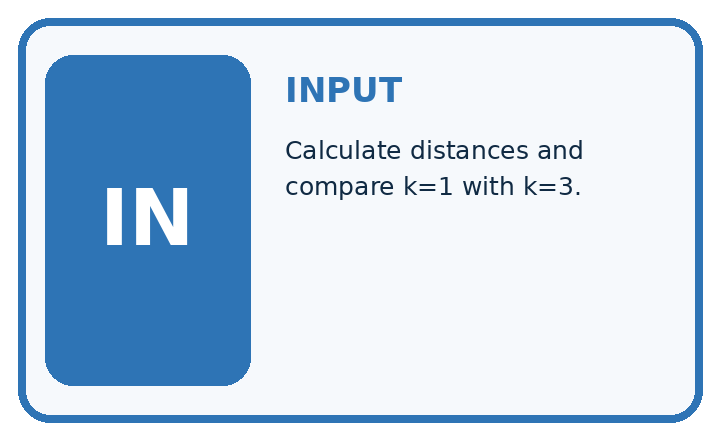
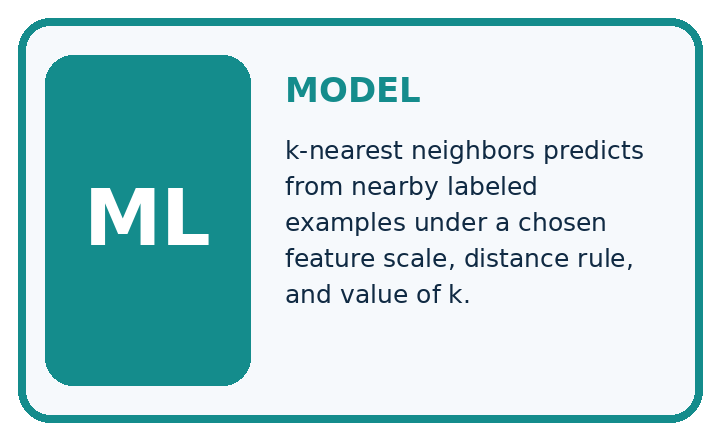
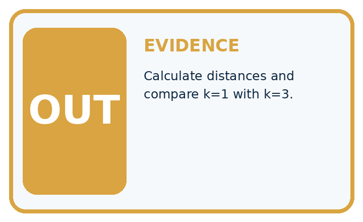
QUESTION Calculate distances and compare k=1 with k=3.
MODEL IDEA k-nearest neighbors predicts from nearby labeled examples under a chosen feature scale, distance rule, and value of k.
PROOF NEEDED Use an unseen case, visible calculation, error analysis, and a stated limitation.
Draw a fresh data → model → prediction → evaluation trace:
A closer explanation
train = [("A", 2, "blocked"), ("B", 4, "clear"),
("C", 8, "clear"), ("D", 10, "blocked"),
("E", 12, "clear")]
query = 3
ranked = sorted((abs(x - query), item_id, label)
for item_id, x, label in train)
near = ranked[:3]
labels = [row[2] for row in near]
prediction = "clear"
if labels.count("blocked") > labels.count("clear"):
prediction = "blocked"
print([row[1] for row in near])
print(prediction)For query 3, distances to A through E are 1,1,5,7,9 cm. sorted orders tuples by distance first, then the unique ID. ranked[:3] takes the first three rows. The output is ['A', 'B', 'C'] then clear: one blocked vote and two clear votes.
If k were 1 under the same distance tie rule, A would win and predict blocked. Changing k can change a prediction. We declared k=3 for this exercise; do not choose k after seeing the desired answer and pretend the method was unchanged.
The code assumes unique IDs, numeric readings, only clear or blocked labels and at least three training rows. It does not validate those conditions. A larger k than the stored row count would not produce the promised number of votes. Keep unresolved review labels under a separate documented policy.
Connect the picture and the explanation
Point to the input, the deciding step and the result in this week’s visual. Explain the same step in ordinary words. A picture helps when you can say what each part represents.
Student lesson · 4 of 14
Compare the cases
EVALUATION DESIGN
Four Tests, Four Kinds of Evidence
A system is not understood until it survives more than one comfortable example.


NORMAL Expected data and expected behavior.
BOUNDARY Value close to a threshold, ambiguous label, or uncertain prediction.
MISSING Necessary field, label, source, or measurement is unavailable.
SHIFTED New lighting, species, device, subgroup, or time condition.
Which case most threatens today's claim, and why?
Change one thing in the pictured case
Change: Move the query to length7 cm.
Prediction: k=1 predicts spotted from B, distance1; k=3 remains spotted.
Reason: Distances become 5, 1, 4 cm, so the nearest tie disappears.
Student lesson · 5 of 14
Words that unlock the idea
VOCABULARY
Words You Can Calculate and Defend
A definition matters when it lets you interpret a new dataset, model, or result.
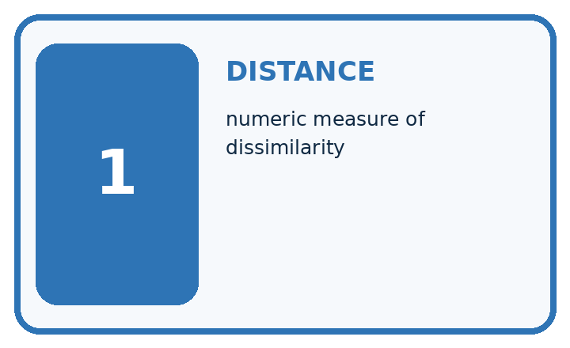
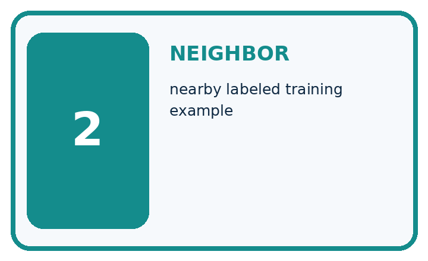
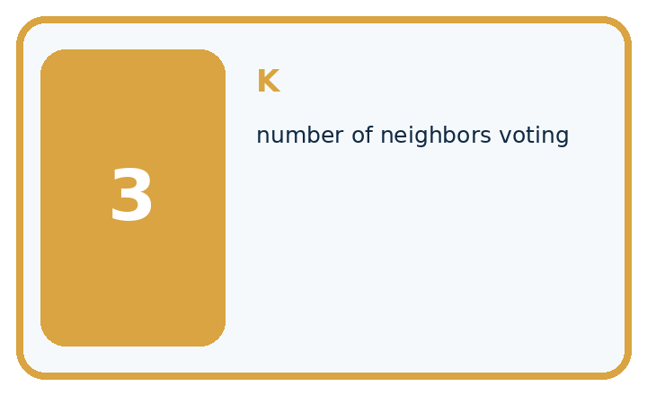
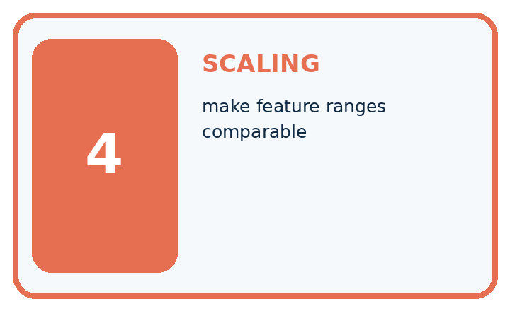
| Term | Precise meaning | My ML example |
|---|---|---|
| distance | numeric measure of dissimilarity | |
| neighbor | nearby labeled training example | |
| k | number of neighbors voting | |
| scaling | make feature ranges comparable |
Repair the claim using a definition, calculation, or test record:
Words used in the closer explanation
| Word | Meaning |
|---|---|
| Distance | A numerical measure of difference between selected feature values |
| Neighbour | A stored training example close under the chosen distance |
| k | The number of neighbours selected for a prediction |
| Vote | A contribution of a selected neighbour’s label to the predicted class |
Student lesson · 6 of 14
Follow a worked example
WORKED EVIDENCE
Reason Step by Step
Predict first. Then check each step. A correct answer without visible evidence cannot be audited.
Four-step worked evidence for Week 12: Nearest Neighbors
STEP 1 New leaf has normalized features (2, 3).
STEP 2 Using Manhattan distance, add the absolute coordinate differences. Training leaves at (2, 2), (4, 3), and (1, 5) have distances 1, 2, and 3 from (2, 3).
STEP 3 With k=1, nearest label wins; with k=3, majority among all three wins.
STEP 4 Rescale features and retest because centimeters must not overwhelm a 0–1 color score.
Recalculate, retrace, or restate the evidence independently:
A closer explanation
Three selected neighbours for query 3
Store the training examples and the method settings. At prediction time, compare the query only with stored training examples. Do not add the query’s reference label or other validation labels to the neighbour pool. No cutoff or tree is fitted here, but retaining training examples is still part of the learning method.
A vote share of two out of three describes these neighbours. It is not a verified two-thirds probability that the new scene is clear. A prediction can be wrong even when the nearest examples agree.
Learn from the worked case
Cover the result before checking it. Say what is given, choose the procedure, and follow one step at a time. Then uncover the result and explain your first mismatch. Ask why a step is allowed, not only what number it produces.
A pictorial worked case: Nearest Neighbors
Let a nearest-neighbour picture show each distance before voting.
The facts we will use
Training: A length 2 healthy; B length8 spotted; C length11 spotted. Query length5 cm. Distance is absolute difference; ties use alphabetically earlier ID.
All inputs and outcomes in this worked example are invented classroom data; no real model run is claimed.


Read the picture one step at a time
Why this result follows
Read the picture in order. All three vote: two spotted and one healthy, so k=3 predicts spotted. The arrows show which recorded input or intermediate result each decision uses. Explain the deciding step aloud before checking the changed case; pointing to the final answer alone does not show how it follows.
What this example does not establish
Length alone is a toy feature, not a disease diagnosis. Distance choices and feature scaling can change neighbours.
Student lesson · 7 of 14
Find and repair a mistake
ERROR DETECTIVE
Compare → Diagnose → Repair
Do not patch the answer. Find the earliest unsupported assumption, data problem, or experiment error.
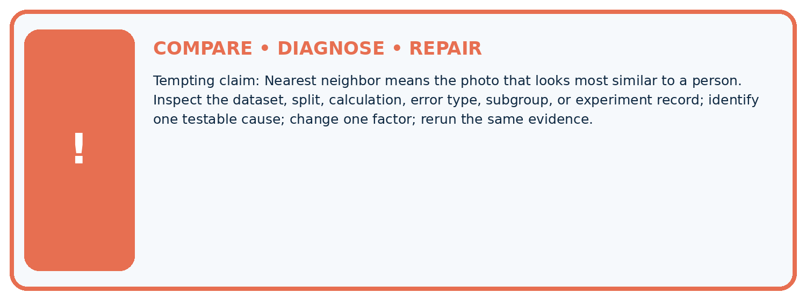
| Evidence record | Expected | Actual | Likely cause / next test |
|---|---|---|---|
| normal case | passes | ||
| boundary case | defined behavior | ||
| missing case | safe fallback | ||
| shifted case | measured limit |
Diagnose one cause and name the cleanest next experiment:
A closer explanation
All distances here use one feature measured in the same unit. With multiple features, their units and scales affect which examples appear close. A large numerical range can dominate a distance calculation. Next week we will address scaling and learn any scaling values from training data only.
Identical readings from different trips can have different labels, and an exact match does not certify truth. Keep related examples grouped across splits as in Week 6. Testing an example against a pool containing itself can make a one-neighbour score misleadingly high; it does not show performance on a new trip.
Student lesson · 8 of 14
Practise together
ML STUDIO
Specify Before You Run
A trustworthy result can be reproduced from the recorded data, code, settings, and evaluation rule.

Experiment record
QUESTION + intended use + success threshold
DATA version + grouped split + leakage check
CODE/preprocessing + features + model + settings + seed
METRICS + positive class + units + denominators
PREDICTIONS + errors + subgroup slices + limitations
HUMAN reviewer + release, revise, limit, or stop decision
Write the minimum record needed to reproduce today's result:
A closer explanation
Keep k=3 and the original five training rows. Validation queries with reference labels are (3,blocked), (9,blocked), (11,clear). Their selected neighbour IDs are A B C, C D E, and D E C respectively. Each group votes clear. Only the last prediction matches, so accuracy is 1/3, about 33.3 percent.
The training-majority baseline also predicts clear because three training labels are clear and two are blocked. It gets the same 1/3 on these validation rows. Record all distances, selected IDs and errors. Trying more k values is a development choice to document; preserve a separate final test for a final evaluation.
Practise with less help: Apply neighbour and tie rules
Use workbook W2 for the connected example “Nearest neighbours and distances”. First fill the input and rule boxes. Try the middle steps before asking for a hint. After a hint, try the next step yourself.
| Plan | Do | Check |
|---|---|---|
| What is given? Which rule or procedure applies? | Record each intermediate step. | Does the result follow? What remains unknown? |
Explain your trace to a partner. Your partner points to one step to check. Swap roles on the next case. Each person writes their own explanation.
Check your reasoning
Use the worked case for Nearest neighbours and distances. Proposed explanation: “A negative difference is a negative distance”. Decide whether this explanation is supported. Point to the step or supplied fact that decides; explain your repair if needed.
Answer on your own before discussion. If you are unsure, say which step you need help with.
Explain the picture
Why is the k=1 outcome at length5 not uniquely determined without a tie rule? Point to the relevant step in the picture, then write the changed result and the rule or evidence that supports it.
This is supported practice. Keep the separately named independent case for an attempt before feedback.
Student lesson · 9 of 14
Run the investigation
EVIDENCE LAB
Predict → Run → Calculate → Interpret
Keep the test conditions fixed, record every result, and change only one planned factor.
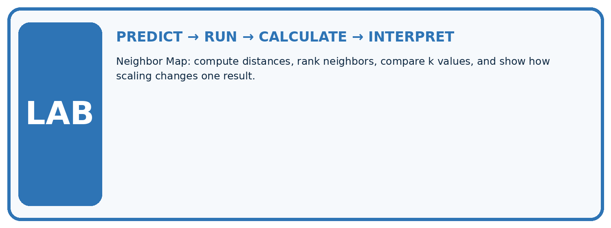
1. Write the hypothesis and expected evidence before running.
2. Neighbor Map: compute distances, rank neighbors, compare k values, and show how scaling changes one result.
3. Run one normal, one boundary, one missing, and one shifted case.
4. Calculate the metric from raw counts or row-level errors.
5. Interpret what changed, what did not, and what remains unsafe or unknown.
| Case | Prediction | Actual | Calculation / evidence | Meaning / next test |
|---|---|---|---|---|
| Normal | ||||
| Boundary | ||||
| Missing | ||||
| Shifted |
Plan → try → check
Before trying: what do I expect, and why? While trying: which step could first go wrong? Afterwards: what did I actually observe, and what should change? Keep “not run” if you only traced the procedure.
Student lesson · 10 of 14
Build your understanding
MASTERY
From Knowing the Word to Owning the Idea
Move upward only when you can produce evidence without copying the example.

DEFINE Use all four terms precisely: distance, neighbor, k, scaling.
CALCULATE Reproduce the worked evidence with units and denominator.
TRACE Explain the data, code or decision path.
DIAGNOSE Nearest neighbor means the photo that looks most similar to a person.
TRANSFER Solve a fresh dataset or model case.
IMPROVE Change one cause and rerun fixed evidence.
DEFEND State intended use, metric, limitation, and human responsibility.
Student lesson · 11 of 14
Connect your project
CUMULATIVE PROJECT
Responsible Plant Classifier
Every week adds one reviewable artifact to the same evidence-based capstone.
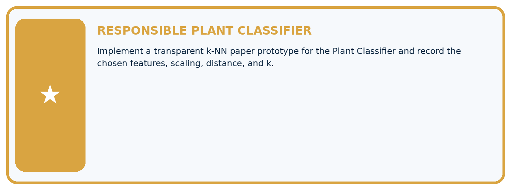
Which requirement or risk does this artifact address?
Which dataset, split, code, and metric version does it use?
What normal and shifted cases were tested?
What remains uncertain or weak?
What decision still belongs to a teacher or qualified human?
My evidence-linked project decision:
Evidence for your project
For your Responsible Plant Classifier, save the input, procedure, observed result and limitation of this check. Label this worked example as practice; use a different, previously unreviewed case when checking independent understanding.
Student lesson · 12 of 14
Show what you know
INDEPENDENT PROOF
Explain • Calculate • Transfer • Defend
Complete this with a fresh case after guided practice and compare it with the mastery criteria.
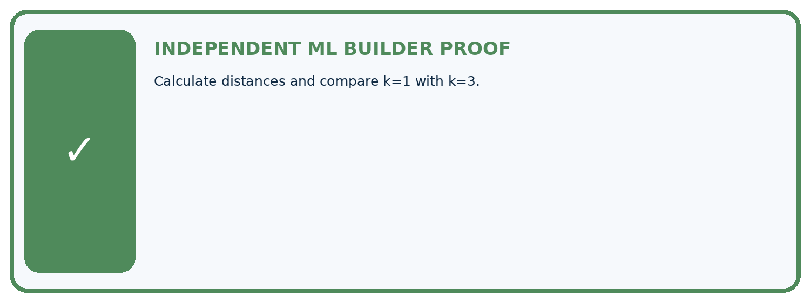
□ Define the task, feature/target roles, and intended-use boundary.
□ Show the calculation, code trace, or experiment record.
□ Test a normal case and one revealing boundary, missing, or shifted case.
□ Diagnose one failure without changing several factors at once.
□ Name a limitation, fairness concern, and the human-review action.
Independent evidence and defense:
My level: □ Not yet □ With one hint □ Independently □ I can teach and defend it
Student lesson · 13 of 14
Study a complete case
Week 12 Worked case
Use the supplied details to practise the weekly concept before attempting the independent question. This case extends the illustrated lesson.
The situation
One-dimensional training points: 2 healthy, 4 healthy, 8 spotted. Query=6; absolute distance.
The question
Find k=1 neighbours and handle ties.
Worked explanation
Distances 4,2,2. Points 4 and 8 tie with different labels. Use a predefined tie policy or uncertainty. Scaling matters with differently measured features.
Explain it in your own words
Which detail supports the answer, and why does it matter?
Trace the supplied case visually
Absolute distance from query 6
| Evidence or stage | Value or result |
|---|---|
| Point 2, healthy | 4 |
| Point 4, healthy | 2 |
| Point 8, spotted | 2 |
One-dimensional training points: 2 healthy, 4 healthy, 8 spotted. Query=6; absolute distance.
Find k=1 neighbours and handle ties.
Distances 4,2,2. Points 4 and 8 tie with different labels. Use a predefined tie policy or uncertainty. Scaling matters with differently measured features.
Student lesson · 14 of 14
Try a new case independently
Independent case: Changed independent case
Training points: A length1 healthy, B length5 spotted, C length9 healthy. Query length7. Use absolute distance; for a nearest-neighbor tie choose the alphabetically earlier ID. Compare k=1 and k=3.
Attempt this case before feedback. Record any help. Earlier examples below are further practice; a case already practised with feedback cannot establish fresh transfer.
Week 12 Independent application
Close the worked explanation. Apply the idea to this different question without copying.
For one feature, labeled points are 2:fern and 8:grass. A new point is 6. Under one-nearest-neighbor with absolute distance, predict its label.
My answer, with a trace, calculation or supporting evidence
Create and test
Change one relevant detail. Predict the result before testing. Include a boundary or missing-information case when it helps reveal a limit.
My changed input and expected result
Connect to your project
Implement a transparent k-NN paper prototype for the Plant Classifier and record the chosen features, scaling, distance, and k.
The evidence I will keep
Your teacher has the independent answer and scoring criteria. Complete the matching workbook week to keep your practice evidence together.
Transfer practice from the original programme
Training lengths 2(H),6(S),10(H); query=8. Compute distances. Explain the tie and why combining length in mm with width in cm changes a two-feature distance.
Use feedback to improve
Attempt the independent case before hints. Record whether you worked alone, used a hint or followed a model. After feedback, fix the first unsupported step and explain why it changed. A later check uses a changed case, not a copied answer.